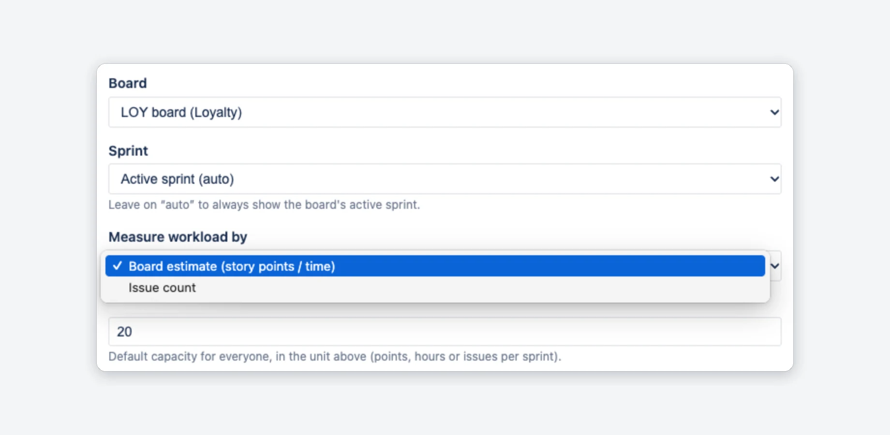
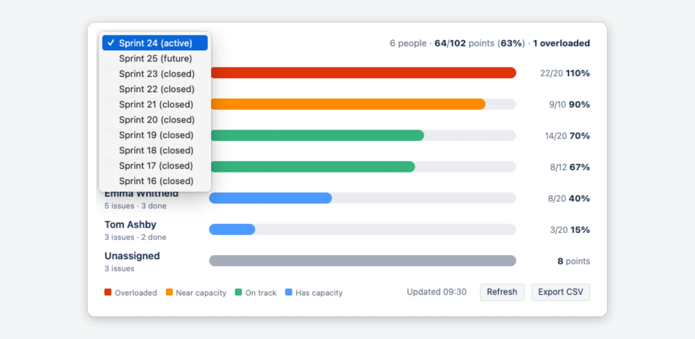
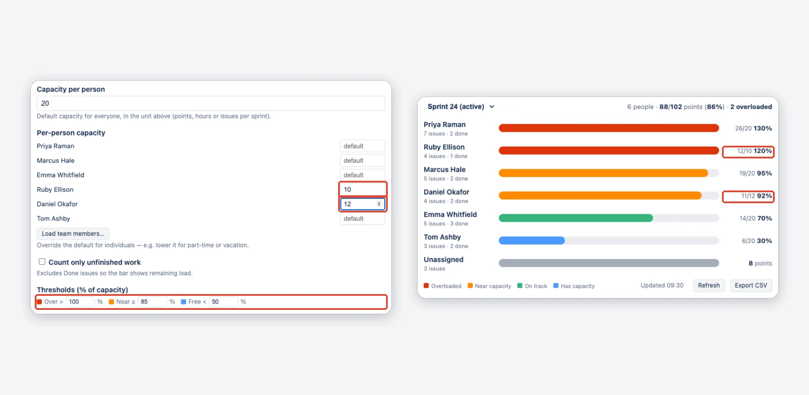
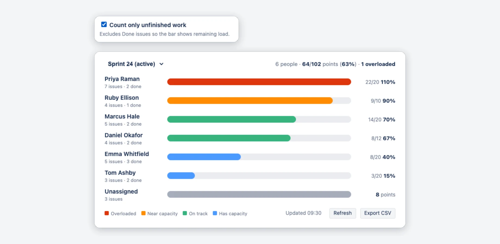
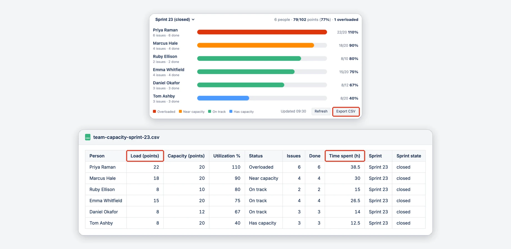

Team Capacity for Jira — Documentation
A sprint workload heatmap for your Jira dashboard: see who is overloaded, near capacity or has room.
On this page
Quick start
- Open a Jira dashboard → Add gadget → search for “Team Capacity”.
- Open the gadget's Edit (pencil) menu and pick a Board.
- Choose how to measure workload and a default capacity per person.
- Save. The heatmap appears right away; Refresh reads the latest numbers.
What it does
Team Capacity for Jira is a dashboard gadget. It reads the sprint of a Scrum board, adds up each person's estimated work, compares it with their capacity and draws one color-coded bar per assignee, highest share of capacity first. The header shows the sprint and the team total (people, load/capacity, number overloaded).
- Overloaded (red) — load above capacity (over 100 % by default)
- Near capacity (amber) — 85–100 % by default
- On track (green) — between the two limits (50–85 % by default)
- Has capacity (blue) — below 50 % by default
- Unassigned (grey) — sprint work nobody owns yet gets its own row, last in the list, and is not part of the team total
A bar never grows past 100 %; the number next to it shows the real value (for example 130 %).

Setup
Any user can add the gadget to a dashboard they can edit. The Edit (pencil) menu has these settings:
- Board — a Scrum board, company-managed or team-managed. The list shows Scrum boards in projects you can browse.
- Sprint — keep Active sprint (auto) or pin one. Auto shows the active sprint; with none, an upcoming sprint, otherwise the most recent closed one.
- Measure workload by — the board's estimate (story points or time) or issue count. See How workload is measured.
- Capacity per person — one default for everyone, in that unit (points, hours or issues per sprint). The form starts at 20. Pro settings: see Capacity.

Sprints and Refresh
The sprint menu in the heatmap header lists the active sprint, upcoming sprints and up to eight recent closed ones. A switch is not saved: after a reload the gadget shows the sprint set in Edit.
The gadget does not reload itself. The footer shows when the numbers were read (“Updated 09:30”). Click Refresh, or the refresh button of the gadget or dashboard, to read Jira again. The sprint you switched to stays selected.

How workload is measured
Workload comes from the estimation your board already has. Nothing to re-enter, nothing to sync.
Board estimate (default)
- Story points — company-managed “Story Points” and team-managed “Story point estimate” (story points).
- Time — boards that estimate with Original estimate are converted to hours.
- An issue without an estimate adds 0, but still counts in the person's issue count.
Empty estimate fields
Where the board's story point field is empty on an issue, the standard Story Points field is used instead. If none of the sprint's issues has an estimate, the gadget says “No estimates on these issues”: add estimates, or switch to Issue count.
Issue count
For teams that don't estimate: every issue counts as 1, and capacity is “issues per sprint”.
Capacity, thresholds & colors
The default capacity is free. The three settings below need Pro; without it they are greyed out with a PRO badge and the defaults apply.
- Per-person capacity PRO — for part-timers, new joiners or anyone with less time. In Edit click Load team members… and type a number next to a person; blank means the default. A person's number applies to every sprint the gadget shows until you change it.
- Count only unfinished work PRO — leaves out issues in the Done status category, so mid-sprint each bar shows the work still open.
- Thresholds PRO — in percent of capacity: Over > 100, Near ≥ 85, Free < 50 by default.
The app does not read leave or public holidays: if someone is away, enter the lower number yourself.
Team members, capacity 0, threshold order
- Load team members… lists the people who have issues in the selected sprint, so pick the sprint first.
- A capacity of 0 shows the load as a grey bar, without a status color.
- Per-person capacities use the unit of Measure workload by too: after a switch to Issue count, set them again.
- Keep the thresholds in order (Free ≤ Near ≤ Over), otherwise the defaults apply.
- Without an active license, saving the settings removes the per-person capacities and resets the other Pro settings to their defaults.


CSV export — estimate vs actual PRO
Export CSV in the heatmap footer downloads one row per person for the sprint on screen as a
CSV file
named team-capacity-<sprint>.csv. It opens directly in Excel or Google Sheets.
Columns: Person, Load, Capacity, Utilization %, Status, Issues, Done, Time spent (h), Sprint, Sprint state. Time spent is the total time logged in Jira on that person's sprint issues.
More about the file
- Load follows the gadget's settings, for example only unfinished work.
- The unassigned row is included, without capacity.
- If the sprint has more than 500 issues, the file ends with a note that the numbers are partial.
- Without Pro the button is greyed out.

Permissions & privacy
What the app can see and where your data stays.
- The app is read-only: it cannot change any Jira data.
- Your Jira project permissions (Browse Projects) are checked on the server for every request.
- Built on Atlassian Forge with no external data transfer — your data stays in Atlassian (“Runs on Atlassian”).
- Details: Privacy Policy · Security Policy.
FAQ
Messages the gadget can show, and common questions.
“No estimates on these issues”
The board estimates in points or time, but the sprint's issues have no estimate yet. Add estimates, or switch Measure workload by to Issue count in Edit.
“No active or recent sprint found on this board”
The board has no sprints at all. Create one, or pick a different board in Edit. With sprints but none active, the gadget shows the next upcoming or the latest closed sprint.
“You do not have permission to view this board”
The app shows a board only to people who can browse its project. Ask your Jira admin for Browse Projects on the board's project.
My board is not in the list
Scrum boards and team-managed boards in projects you can browse are listed; a team-managed board without sprints shows “No active or recent sprint found”. Classic Kanban boards are not, because they have no sprints. Kanban (date-window) support is on the roadmap.
Can I set a different capacity for part-time team members?
Yes, with Pro: override the default capacity per person, for example for part-timers or new joiners. The app does not track absences, so you enter the lower number yourself. Without Pro, one default capacity applies to everyone.
Why is there an “Unassigned” row?
Work without an assignee is real load. Hiding it would make the team look less busy than it is.
Very large sprints
The gadget reads up to 500 issues per sprint. A larger sprint shows a banner, and the loads are partial sums.
Support
Questions, bugs, feature requests → Support page · support@janekbehrens.de
See also: Privacy Policy · Security Policy · Terms of Service